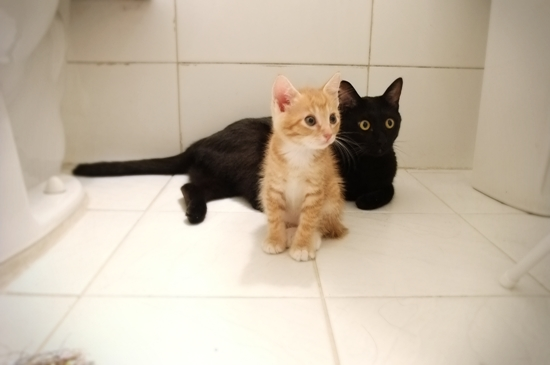

우왕~ 세탁기 멋있다능~!
밤새 망고의 애앵~하는 신음(?)소리에 잠을 설쳤다.
주말출근 인생이라 낮동안 집을 비워야 하는데
결국 장난질이 싸움질되나 싶어 종일토록 신경쓰였다.
부리나케 집에 돌아와보니... 아이고...
사이좋게 현관에 마중나와 우애깊은 형제의 비주얼을 연출한다.
나 없는 사이 둘이서 신사협정이라도 맺은 겐가.
이로써 간장과 망고는 적응 완료!
그... 그루밍을... ㅠ_ㅠ